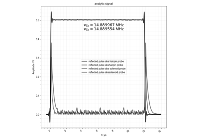
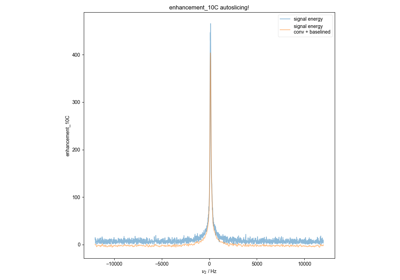
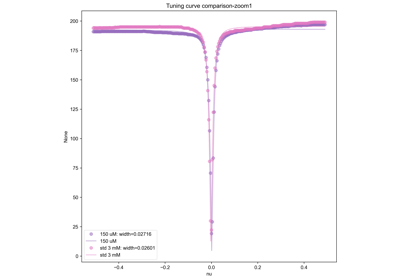
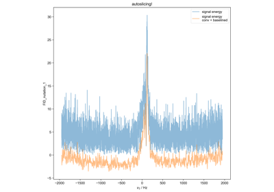
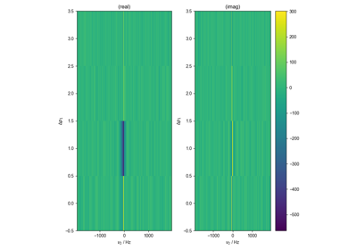
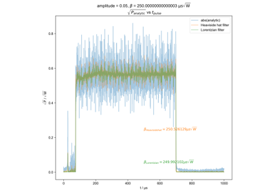
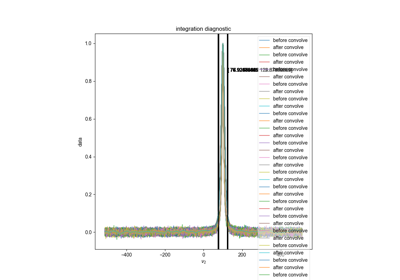
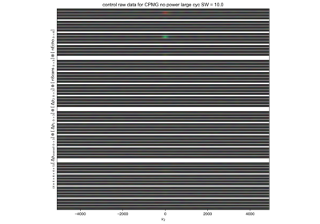
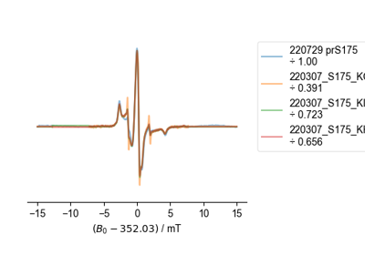
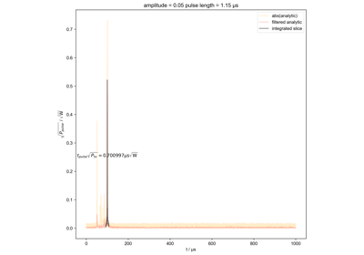

ProcScripts Example Gallery¶
Below is a gallery of examples using our various functions.

Edit the concentration parameter of a saved HDF5 file
Edit the concentration parameter of a saved HDF5 file

Process a square wave reflection
Process a square wave reflection


FID from Echo after Phasing and Timing Correction
FID from Echo after Phasing and Timing Correction
sphx_glr_auto_examples_phaseCycNoise_example.py
A demo of the correlation alignment on a dataset
CPMG-specific processing


Process Enhancement experiment
Process Enhancement experiment
FID from Echo after Phasing and Timing Correction – Challenging Actual Data
FID from Echo after Phasing and Timing Correction -- Challenging Actual Data

Phasing and Timing Correction Using a Varied Tau Experiment
Phasing and Timing Correction Using a Varied Tau Experiment

Processing the Captured Tuning Curve
Processing the Captured Tuning Curve

Process nutation data
Demonstrate Integrate Limits

Process FID nutation data
Read Instrument Log



Show data with postproc

Calculating \beta from individual pulse capture
Calculating \beta from individual pulse capture


Check integral error calculation
Check integral error calculation

sphx_glr_auto_examples_time_domain_noise.py
Here, we want to calculate the time-domain variance to use in error propagation.


Verify the pulse calibration

compare CPMG echo


EPR correlation alignment

Calculate actual beta as a function of pulse length
Calculate actual beta as a function of pulse length